10 Allocation
10.1 allocation yearly
10.1.1 entire city by year
WHY? e.g. to support the base year decision

10.1.2 entire city by year and owner
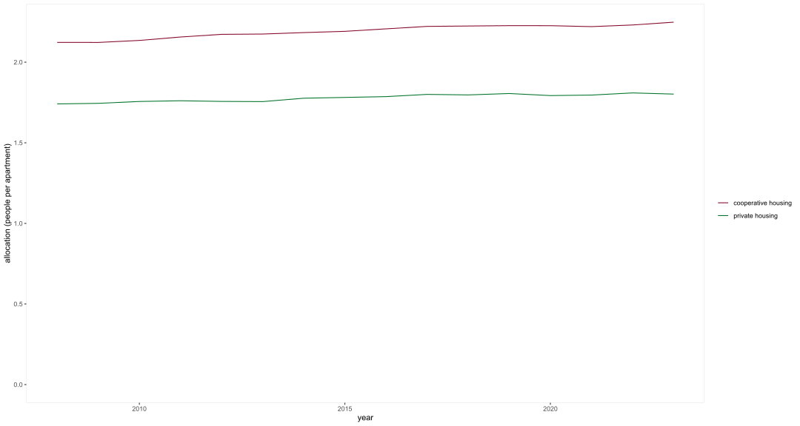
10.1.3 allocation by district, year, owner
10.1.4 apartments by district, year, owner
10.1.5 people by district, year, owner
10.2 predictions
10.2.1 entire city, by owner
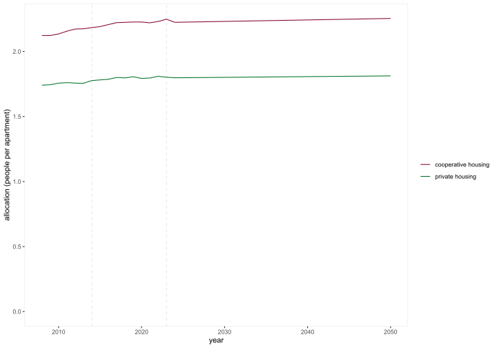
10.2.2 entire city, by district and owner
10.2.3 Escher Wyss, by owner
WHY a different approach for the Escher Wyss district, private housing? same approach as in the living space model (see Section 9.3.3)
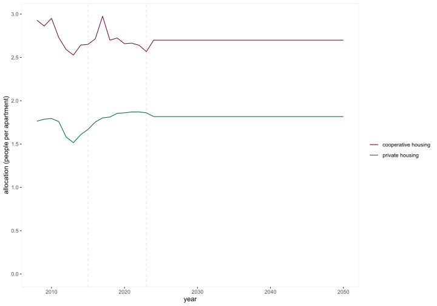
10.3 combine datasets
10.3.1 past and prediction
10.3.2 plot both (i.e. per district, and entire city)
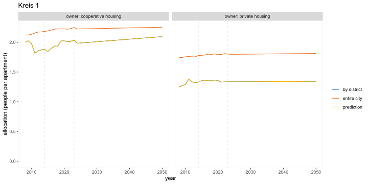
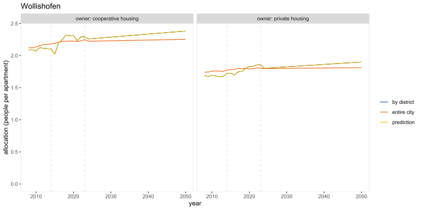
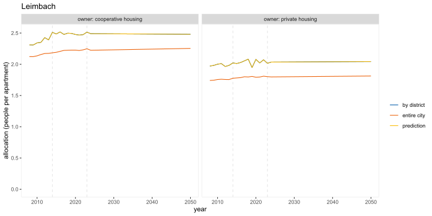
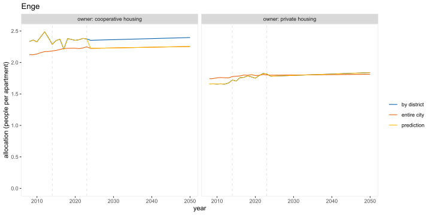
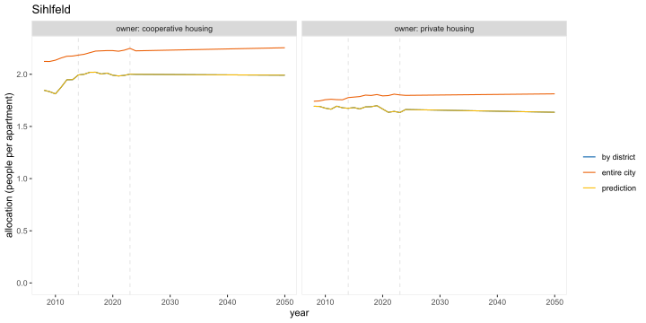

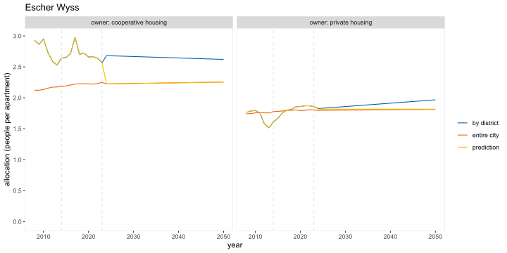
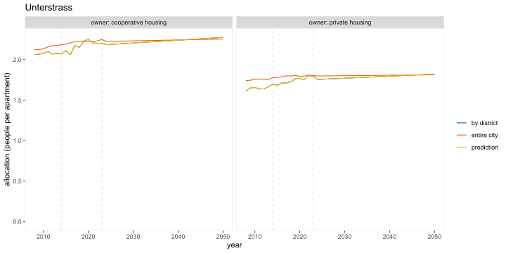
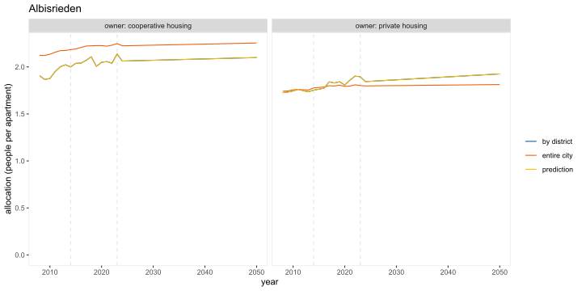
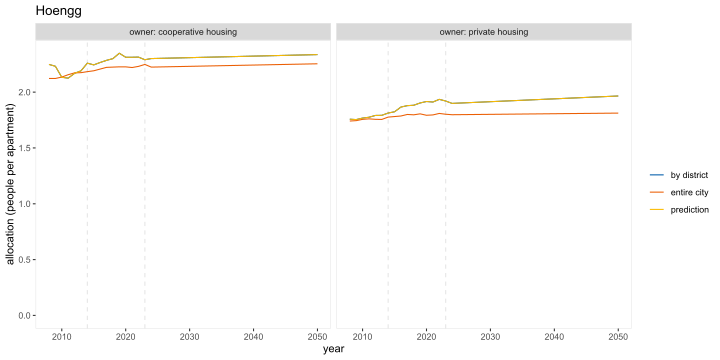

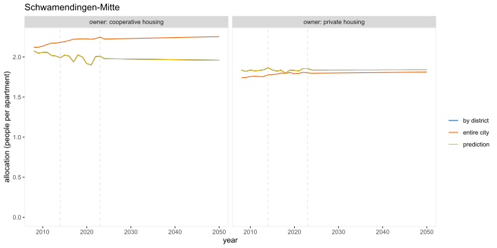